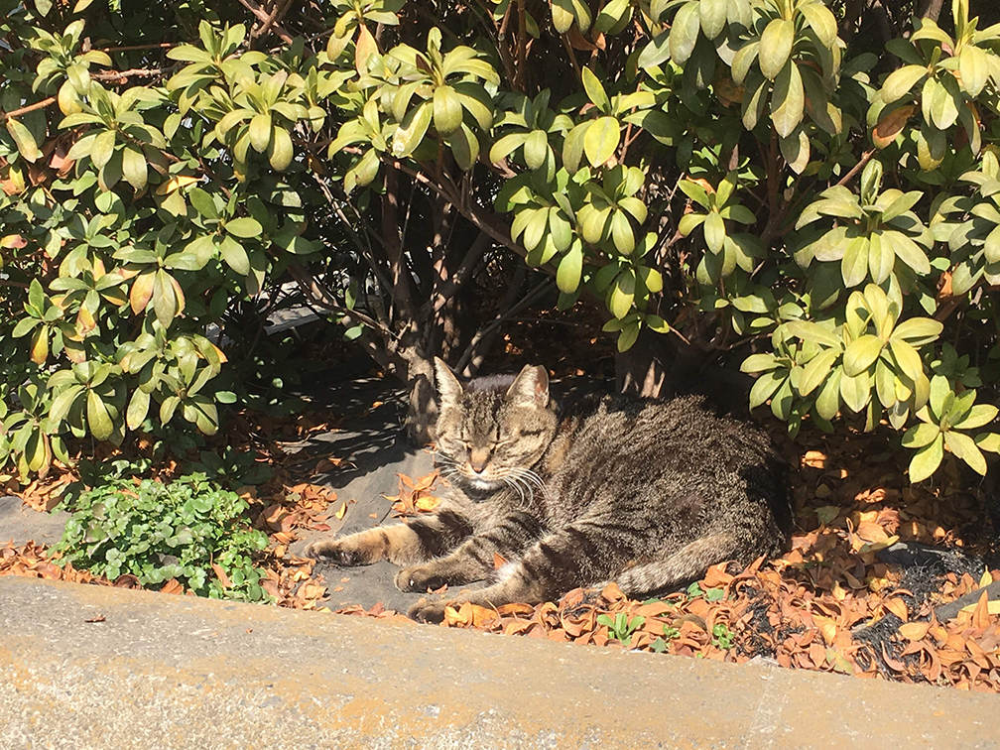
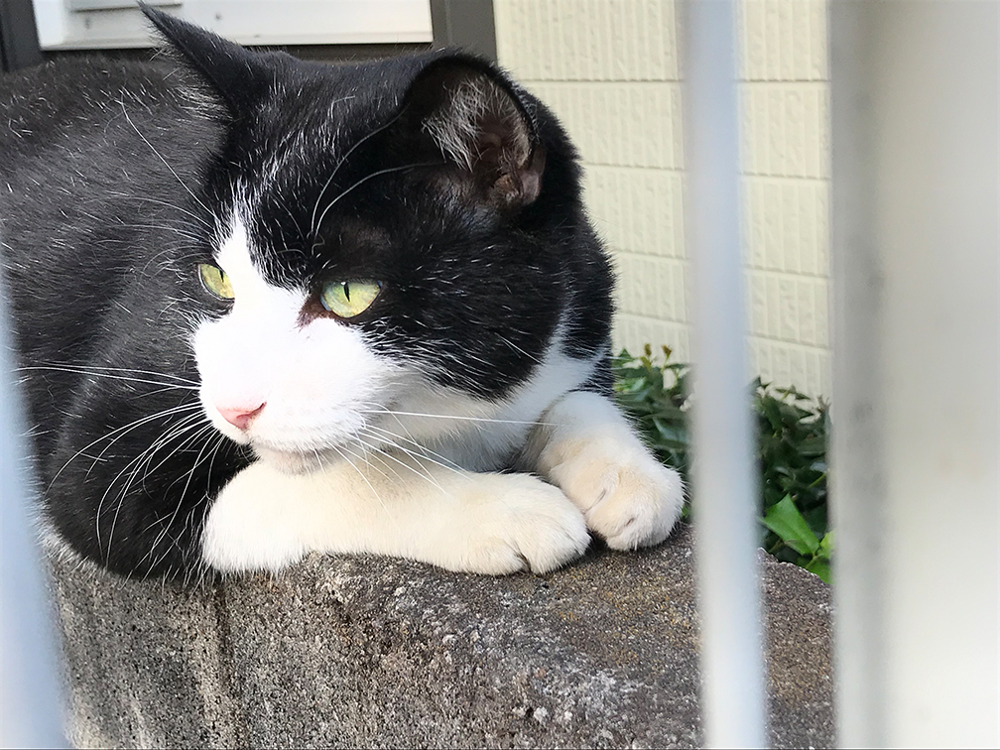
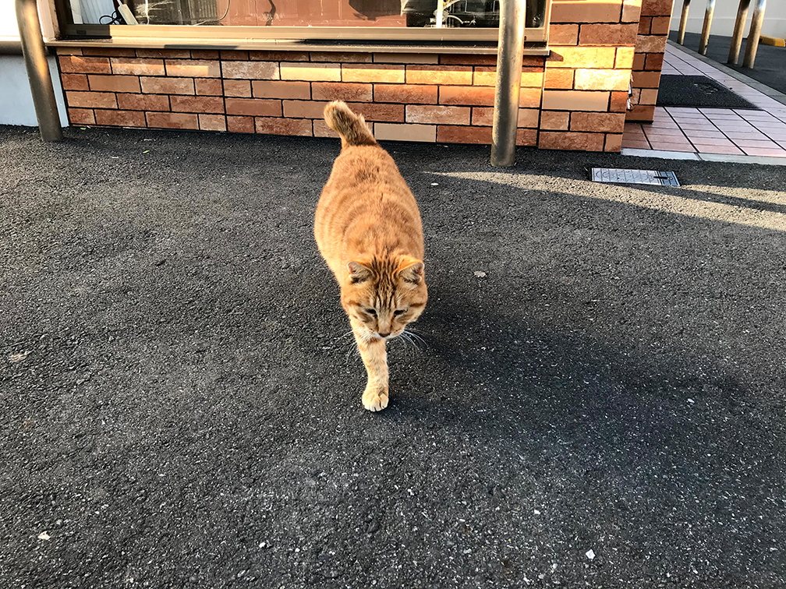
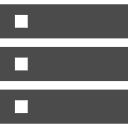

About
- 名前：
- Reiko
- 年齢：
- 31歳
- 前職：
- システムエンジニア 業務システムの開発・運用
- 好きなもの：
- 美術展巡り、漫画、イラスト制作、ねこ(ΦωΦ)
- 2011.4 - 2014.8
- 自動車会社のシステム子会社で業務システムの開発・運用保守を担当
- 2014.9 - 2018.12
- SIerの子会社で業務システムの開発・運用保守を担当
- 2019.8 - 2019.12
- Web制作会社が母体の求職者支援訓練校アジャストアカデミーにてWebデザイン/マーケティングの基礎を学習し、修了
自分が何かを作ることで、困っている誰かを助けたい。
前職からその思いは変わっていません。
これまでは顧客企業の業務をサポートするシステムを維持することが使命でしたが、
より多くの人々を、自分が好きなことで、これまでのスキルも活かして、
助けられる仕事がしたいと思い、Web業界を選択しました。
将来はデザインもコーディングもできるWebクリエイターとして
案件をリードできるようになりたいです。
サイト名「Gattonero」に込めた想いについてはこちら
Photo
猫と遊ぶのも、撮影するのも好きです。



Skill
HTML5、CSS3、Sass(SCSS)を使用したWebサイト作成ができます。jQueryやJavaScript、PHPは簡単なロジックまで組めます。一部作品（ポートフォリオサイト、ブラウザゲーム）はGitHub上でソースコードを公開しています。

作業効率化のためGulpとEmmetを導入し、ソースコードはGitを使って管理しています。エディタはBracketsとDreamweaverを使用しています。

WebサーバはVPSサービスを借りてCentOSのインストールから実施し、必要なアプリケーション導入や設定追加、運用作業を実施しています。
Photoshop、Illustratorを用いて素材加工やイラスト作成ができます。よく使用するのはPhotoshopです。
デザインカンプをAdobeXDで制作しています。当ポートフォリオサイトも設計書としてデザインカンプを作成後、マークアップしました。（ポートフォリオサイトの作品紹介はこちら）
Premiere、EDIUSを使用した簡単な映像編集ができます。学生時代、母校の在校生向けに大学図書館の利用方法をテーマにしたムービー作成を企画し、撮影監督・編集も担当しました。

COBOL、SQL(Oracle PL/SQL、DB2)、VBA(Excel、Access)、ShellScriptの開発経験があります。開発以外は顧客への要件ヒアリングからリリース後の運用保守まで各工程の経験があります。
Word、Excel、PowerPointを用いて仕様書、テスト設計書、作業手順書の作成経験があります。Excelは関数を用いて値を突き合わせるなどテスト検証にも使用していました。
運用保守案件で顧客からの問い合わせやシステム障害対応を経験しました。優先順位付けや問題の切り分けの考え方が身に付きました。
チームで動くことが重要視されていたため、チームで協力し解決する考え方が身に付きました。情報共有やメンバー間のコミュニケーションは怠らないようにしておりました。
Contact
お問い合わせは
メールまたはSNSよりお願いいたします。
susano.amateras.1231@gmail.com